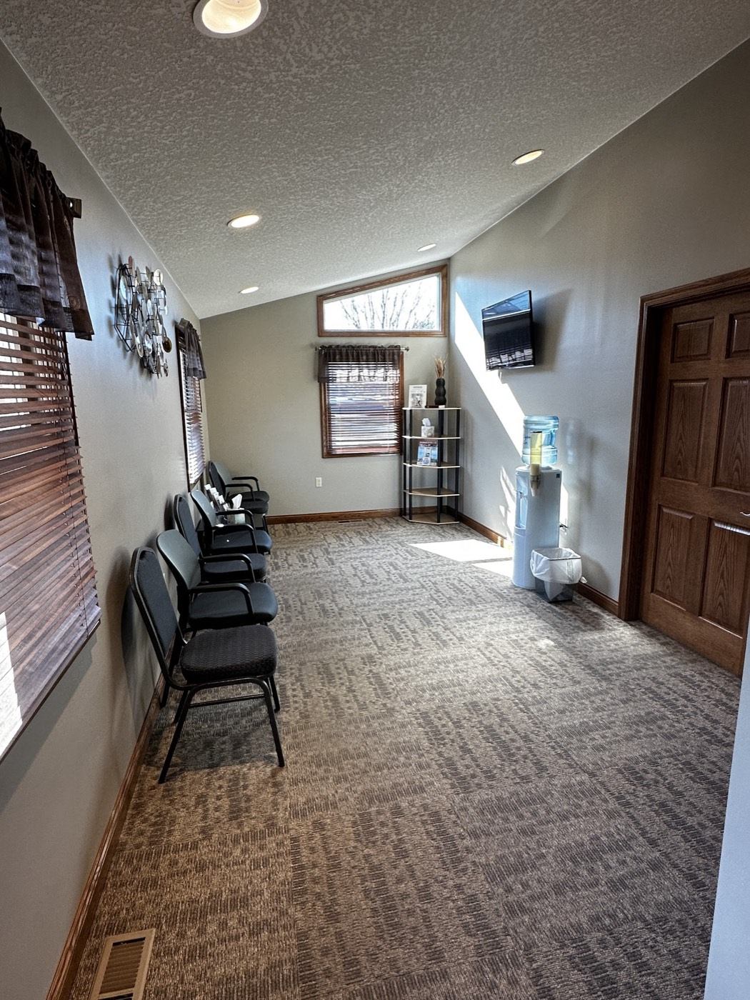

Your visit
What to expect at Family Chiropractic.
A simple guide to visiting Dr. Brian J. Saxton, DC, at 271 W Canal St in Ottoville: when the office is open, how to pay, getting in the door, and common questions.
Mon, Tue, Thu, Fri 8–12 & 1:30–5 · Sat 8–12
Step by step
From phone call to feeling better.
1
Call the office
Appointments are recommended. Call 419-453-2279 during office hours to find a time that suits you.
2
Come in
Look for the blue sign and the brick building on W Canal St. Accessible parking and entrance.
3
Talk it through
Tell Dr. Saxton what hurts and when. Patients describe his kindness and attentiveness.
4
Your adjustment
Then decide together when, or whether, you should come back.

Good to know
Hours, payment & access.
Office hours
- Monday, Tuesday, Thursday, Friday: 8 AM–12 PM and 1:30–5 PM
- Saturday: 8 AM–12 PM
- Wednesday and Sunday: closed
Payment
Credit and debit cards are accepted. For insurance questions, call the office before your visit.
Accessibility
Wheelchair-accessible parking, entrance and restroom.
Questions
Frequently asked.
Do I need an appointment?
Appointments are recommended. Call 419-453-2279 and the office will find you a time.
When is the office open?
Monday, Tuesday, Thursday and Friday from 8 AM to 12 PM and 1:30 to 5 PM, and Saturday from 8 AM to 12 PM. The office is closed Wednesday and Sunday. Holiday hours may differ.
Are you open on Saturdays?
Yes, Saturday mornings from 8 AM to noon.
Which doctor will I see?
Family Chiropractic Center is the office of Dr. Brian J. Saxton, DC. He is the chiropractor here.
How can I pay? Do you take insurance?
Credit and debit cards are accepted. Coverage depends on your plan, so please call the office to ask about your insurance before your first visit.
Is the office wheelchair accessible?
Yes. There is wheelchair-accessible parking, an accessible entrance and an accessible restroom.
Where exactly are you?
271 W Canal St, Ottoville, OH 45876, the single-story brick office with the blue “Family Chiropractic Center” sign out front. Open in Google Maps.